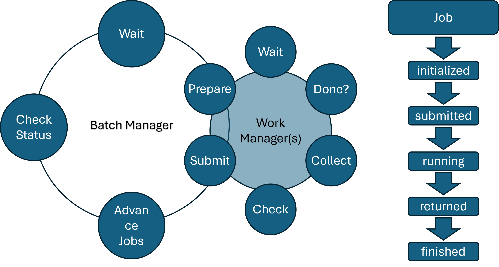
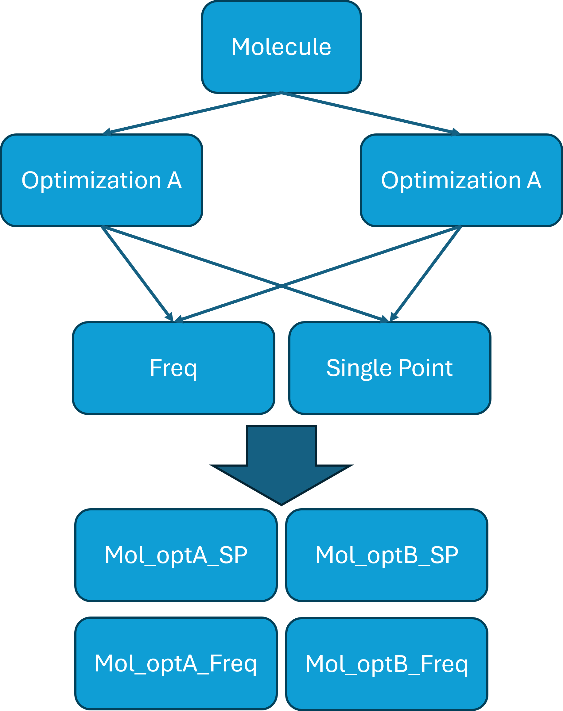
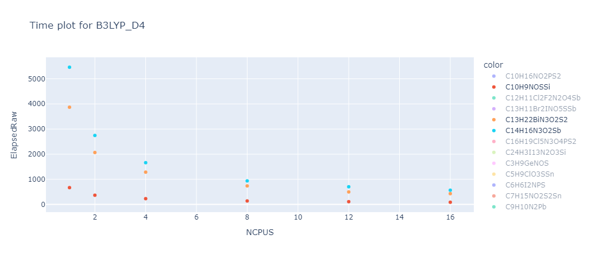
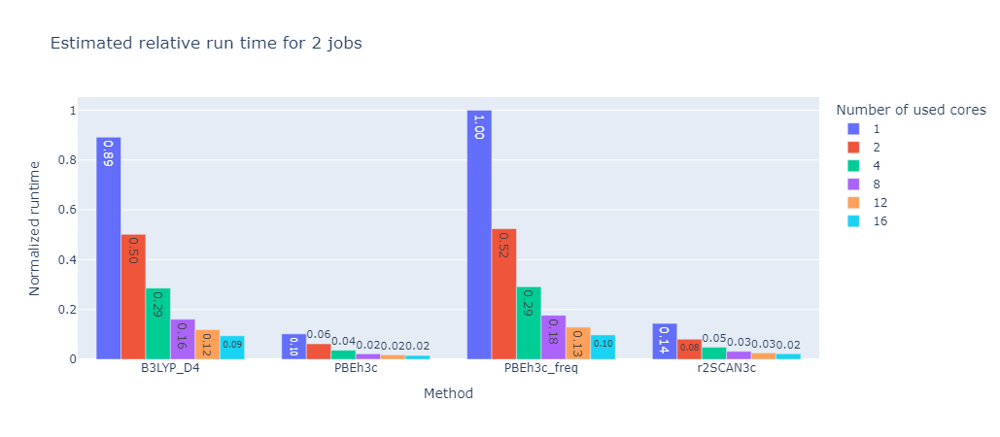
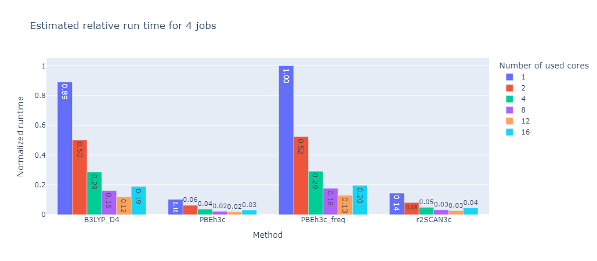
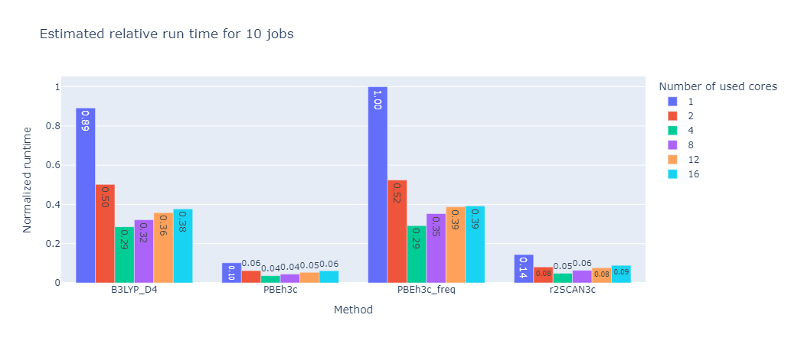
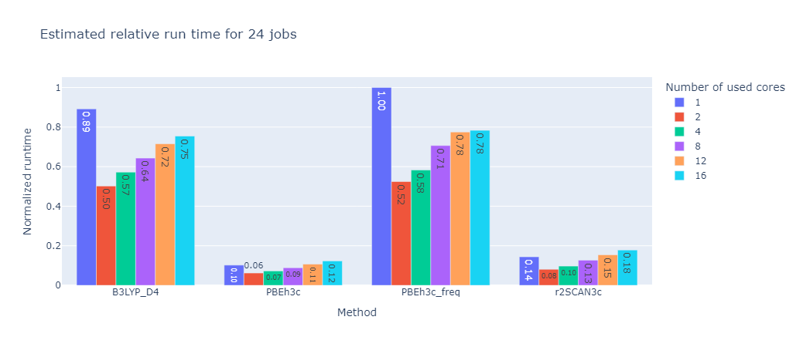
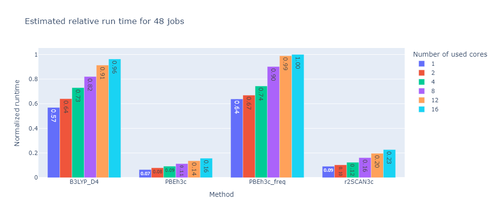
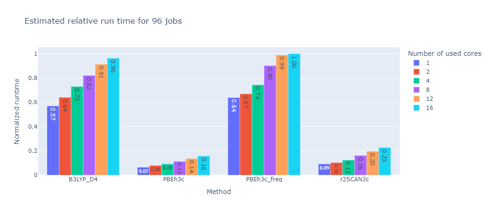

How does this program work?
Interface between python and the calculation module
A core requirement for this program was the ability to seamlessly integrate different quantum chemistry software packages (eg. Orca, Gaussian, RSA, CREST, etc ). The difficulty in managing these different tools is that they all have different input and output formats. To allow for a single work_manager class to manage all these different tools, a template class was created from which all calculation tool classes inherit a common interface structure.
This template class provides a few basic functions that the work manager uses to interact with the calculation module. This approach allows the usage of any quantum chemistry software as long as a corresponding child class of the template is implemented.
The main functions of the template are:
creating the slurm script that will be submitted to the server.
preparing the jobs that will be submitted to the server.
checking the status of the jobs that are currently running on the server.
collecting results from the server and storing them in the correct location.
submitting new jobs and restarting failed jobs.
All of these functions depend on the used quantum chemistry software package. However this interface should cover all aspects needed for the usage of any software package with this program.
Three layers of abstraction
The core of this program is divided into three different layers. The inner most layer is the JOB, the second is the work_manager and the outer most layer is the batch_manager.
{kind=link}

The batch_manager is the outer most layer and is responsible for managing the work_managers. It is given a list of molecules and a list of calculations as well as the order in which these calculations have to be performed.
{kind=link}

The example flow chart reads as follows:
The initial guess is optimized according to Optimization A and Optimization B before both results are advanced to each Single Point step. This parallelization allows for a quick and efficient generation of new data. It is of course also possible to have many more calculations in sequence or parallel. For example a MM calculation followed by a QM calculation and followed up by a frequency calculation.
Performance considerations
To make this program as efficient as possible the following cost considerations were made:
Running the actual calculations is the most expensive part of the program. As a result, the python script will wait for most of its run time and only check occasionally for finished jobs.
The python part of this program is usually run on the login node of the cluster. This node is not designed to run heavy calculations and can be slow to respond to user input. To minimize the time spent on the login node, the program is designed to only run the minimum amount of code on the login node. This is done by submitting all calculations to the slurm workload manager and only use the login node to check the status of running jobs and submit new ones.
To further reduce impact on the login node this program is running sequentially, thus checking all jobs in a loop on a single core and idling for most of its run time.
Automatic resource allocation
To further improve efficiency for the generation of larger datasets, an automatic resource allocation scheme was implemented based on results from a benchmark over multiple molecules and calculation methods. In this benchmark the same calculations were performed with different number of cores per job to see if the useage of more cores in parallel is actually beneficial.
A good representation of the results can be seen in the following graph:
{kind=link}

As one can see the overall calculation time decreases with the number of cores used, however the decrease is not linear. This means that the more cores per job are used the less efficient the calculation becomes. This is due to the fact that the calculation is not perfectly parallelizable and the overhead of managing many cores becomes more expensive than the benefit of running the calculation in parallel.
To find the optimal number of cores for a given calculation the program will estimate the time it takes to run the calculation with different number of cores and then choose the number of cores that will finish whole set of calculation the fastest. This is based on the selected number of nodes these calculations can request from the server and the number of calculations that are currently running on the server.
This way the program will always try to run the calculations as fast as possible without overloading the server with unnecessary calculations.
 2 Jobs |
 4 Jobs |
 10 Jobs |
 24 Jobs |
 48 Jobs |
 96 Jobs |
{kind=link}
{kind=link}
{kind=link}
{kind=link}
{kind=link}
{kind=link}
These graphs were created with a set limit of 48 cores. While the absolute time is of course different for each calculation method their relative tendencies are identical. For this benchmark the optimal number of cores was the number of cores divided by the number of calculation rounded up if necessary.
Local vs Remote operations
This program provides a local interface for configuring settings, collecting necessary files, and transferring them to a remote server. Once the files are transferred, the program initiates and monitors calculations on the remote server. After the calculations are completed, the results are extracted and sent back to the local machine. The program then presents the results in an organized table for easy analysis and review.